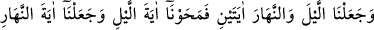
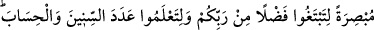
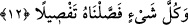

YILLARIN SAYI VE HESABI
12. Biz geceyi ve gündüzü, iki âyet yaptık. Gecenin âyetini sildik, gündüzün
âyetini aydınlatıcı kıldık ki hem Rabbinizin lütfunu arayasınız ve hem de yılların
sayı ve hesabını bilesiniz. Biz her şeyi açık açık anlattık.
“Biz geceyi ve gündüzü iki âyet yaptık” yâni Biz, gece gündüzün peş peşe gelmeleri,
uzama ve kısalma konusunda birbirlerinden farklı olmaları sebebiyle onları kâdir ve
yaratıcı olan Allah’ın varlığına ve birliğine delâlet eden iki âyet kıldık. Çünkü her
değişenin mutlaka bir değiştireni vardır. Âyette “gece” gündüzden önce zikredilmiştir.
Çünkü ayların hilâli (ilk günleri) geceleyin ortaya çıkar.
Başka bir âyette “Meryem’in oğlunu ve annesini bir âyet kıldık.” (el-Mü’minûn,
23/50) buyrulduğu halde burada “Biz geceyi ve gündüzü iki âyet yaptık.” buyrularak
onlara “iki âyet” denilmesi, Hz. Îsâ ve Meryem’in aksine gece ve gündüzün birbirine zıt
olmaları sebebiyledir. Yine denilmiştir ki: Îsâ ve Meryem aynı zamanda idiler. Güneş
ve ay ise farklı iki zaman için âyet olup, ikisini aynı anda parlak olarak görmek mümkün
değildir.
“Gecenin âyetini sildik” Yâni Biz o âyeti sildik ki o gecedir. “el-Mahv (silmek)”
sâbit olan bir şeyi silmek, izâle etmek, ortadan kaldırmak demektir. Burada kasdedilen,
onun ışığı sönmüş ve silinmiş olarak yaratılmasıdır. Bu Arapların: “Sivrisineği küçük,
fili büyük yaratan Allah noksanlıklardan münezzehtir” sözüne benzer. Yâni gecenin
ışığının silinmesi, gündüzün aydınlık kılınması mukabilindedir. İşte karîneden
anlaşıldığı üzere onları böyle yaratmıştır.
“Gündüzün âyetini” yâni gündüz demek olan âyeti, eşyânın görüleceği şekilde
“aydınlatıcı kıldık ki” âyette gündüz, gündüz ehlinin hâliyle vasıflandırılmıştır.
“Gecenin âyeti” ve “gündüzün âyeti” ifâdelerindeki izâfetin hakîkî izâfet olması da
câizdir. Buna göre gece ve gündüzün âyetinden maksad, ay ve güneştir.
Rivâyet edilmiştir ki Allah Teâlâ ay ve güneşin nûrunu yetmiş parça olarak yarattı.
Sonra Cebrâil (a.s.) Allah’ın emri ile, üç defa kanadını sürdü ayın aydınlığının altmış
dokuz parçasını sildi ve bunu güneşe verdi ki gece gündüzden ayrılsın. Çünkü ilk
zamanda gece ve gündüz birbirinden ayrılmazdı. İşte aydaki siyahlık bu silmenin eseri
olup güzel yüzdeki ben gibidir. Ahmedî devletin zamanı kamerî olunca O’nun yıldızlar
üzerinde liderliği belirmiş oldu. O da bu siyahlıktır. Çünkü siyah renklerin efendisidir.